Everything lives in one window.
A complete downloader, a Stremio-compatible catalog, a built-in browser tuned for downloading, and a mini-player you can float over anything else on your screen.
Downloading a video
From the launcher to a finished file, in a handful of clicks.
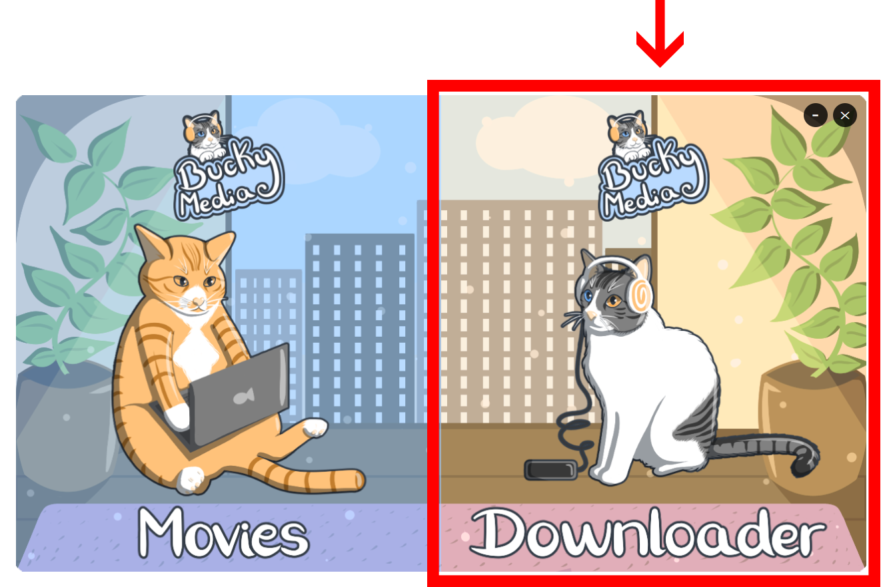
Open the downloader
From the launcher, click the Downloader card to open the video and audio downloader.
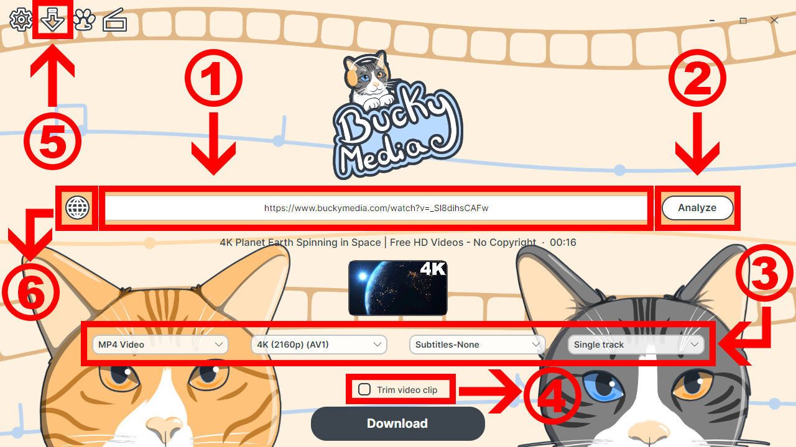
Paste a link and analyze it
A preview of the downloader:
- 1 Paste your video's URL into the address bar.
- 2 Click Analyze to fetch the video's title, thumbnail, and every available format.
- 3 Use the dropdowns to pick format, quality, subtitles and audio track. This is Advanced Mode — turn it off in Settings for a single, simple dropdown instead.
- 4 Check Trim video clip if you only need part of the video.
- 5 Open Downloads to see active transfers and your full history.
- 6 Open the built-in browser when a site needs to be browsed before you can grab its link.
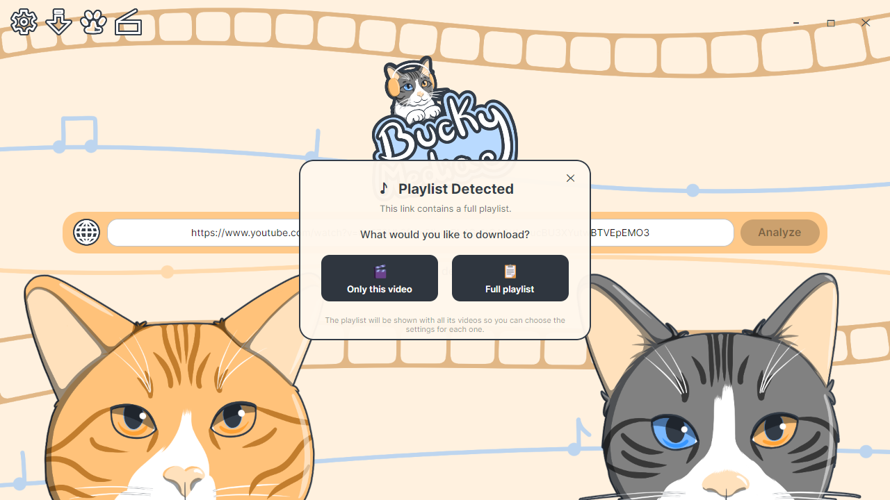
Playlist? Your call
Paste a playlist link and BuckyMedia asks first: grab only this video, or open the full playlist to choose per-video settings.
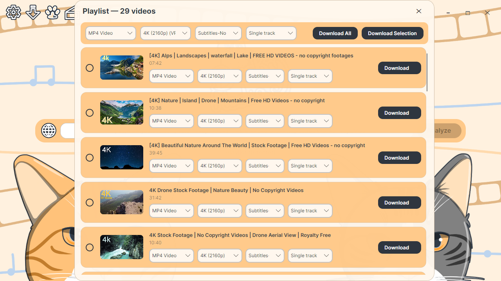
Fine-tune every video in a playlist
Set format, quality, subtitles and audio track for the whole playlist at once, or override any single video, then download everything or just your selection.
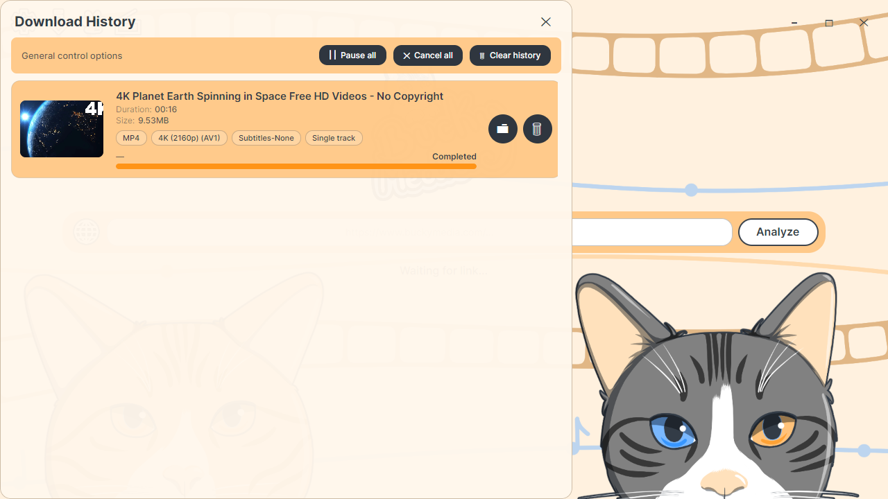
Keep an eye on your downloads
The downloads window shows every active transfer plus your full history, with one-click controls to pause, cancel or clear it all.
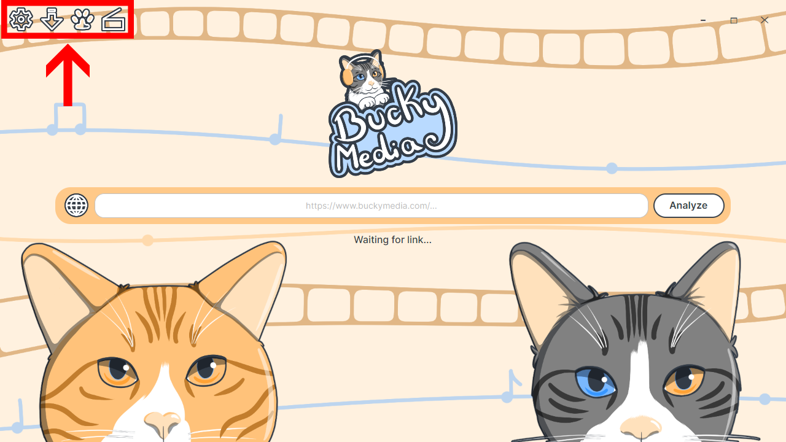
Everything, one click away
Settings, downloads, support window(just in case) and the catalog are all sit in the same corner, so switching between them never breaks your flow.
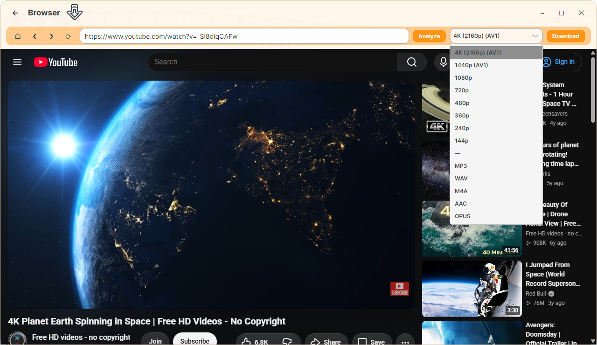
Use the built-in browser
Some sites need a bit of browsing before a link is ready to grab. The built-in browser is tuned for exactly that, with Analyze and Download sitting right in its toolbar.
Browsing the catalog
A movies-and-series library that speaks the same protocol as Stremio addons — without the Stremio name.
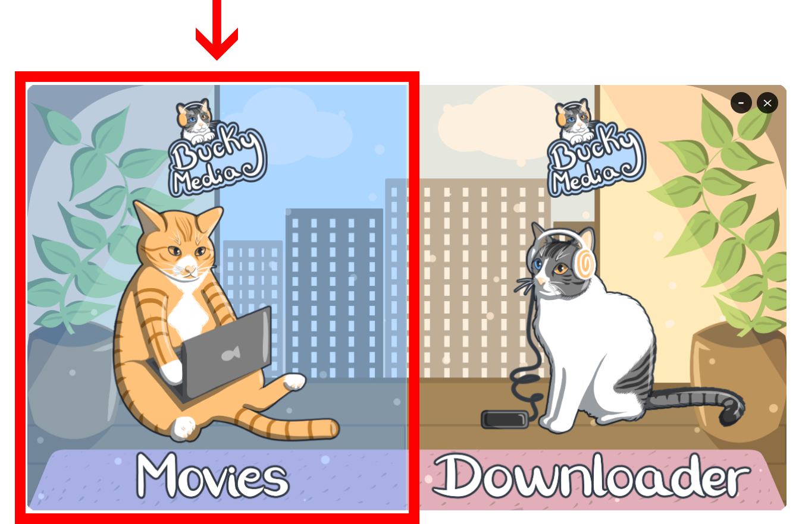
Open the catalog
From the same launcher, click Movies to open the catalog.
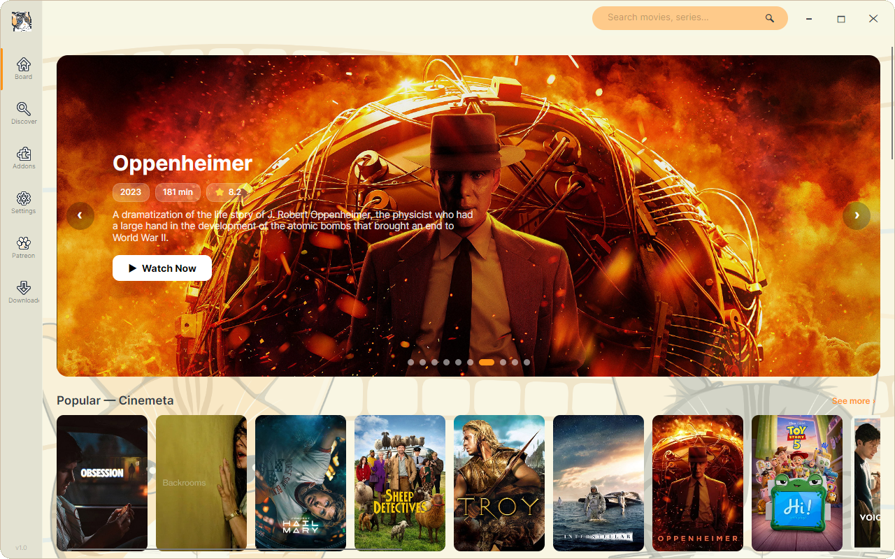
Explore and watch
Browse featured titles and popular picks, then hit Watch Now to see the available results from your installed add-ons.
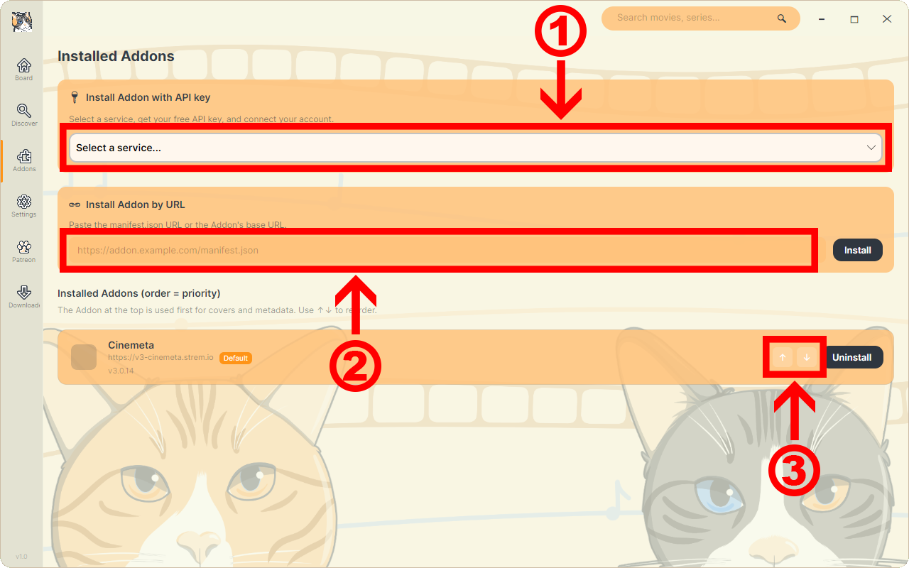
Add addons, set their priority
- 1 Install an addon with an API key straight from a service.
- 2 Or paste an addon's manifest URL to install it directly.
- 3 Reorder your addons — the one on top wins for covers and metadata, so putting TMDb above Cinemeta means TMDb's results show first.
Make it yours
Themes change the app's colors and backgrounds — and the extension's, too.
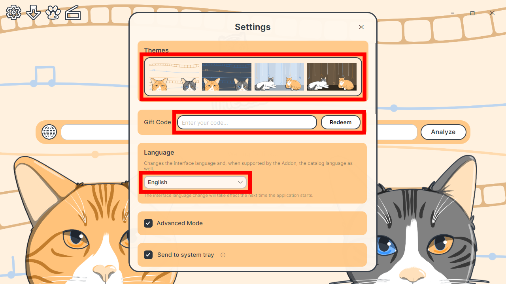
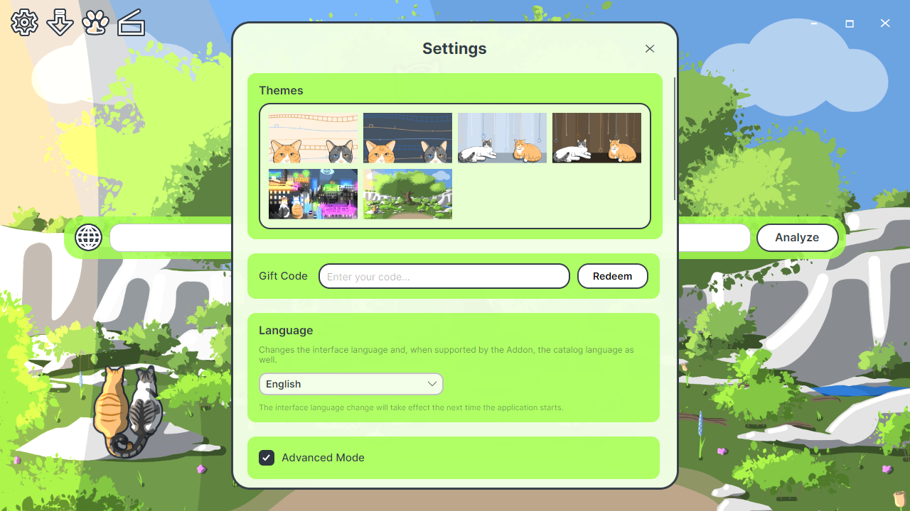
New themes unlock with a gift code. We appreciate the support by giving away hand-drawn themes to our supporters, and we will also be giving away new themes on our social media to all users of our apps.
Grab the desktop app
Free, no account required, no ads — ever.